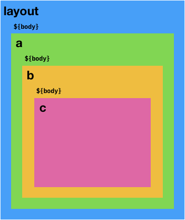
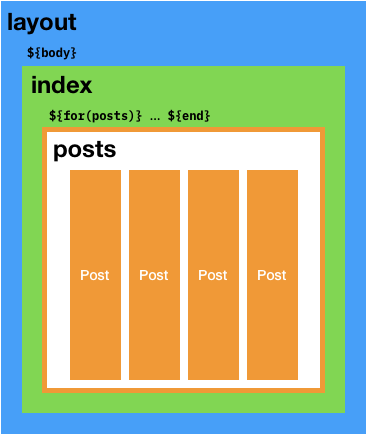

Pages and Structures
Pages and Structures are fundamental data types in Pencil. Understand them and you shall succeed.
A Page contains:
- The contents of the file that you loaded.
- The outbound file path.
- Settings on how the page should be rendered. For example,
escapeXml :: Page -> Pageis a function that will tell the page to escape XML/HTML tags when rendered.
That seems easy enough. But if all we had was the Page type, Pencil wouldn’t be all that useful. It would be just a glorified Markdown renderer. To support page re-use, we need some way to combine or stitch different pages together. This is where the Structure type comes in.
A Structure defines a nesting structure of Pages. Think of them like Russian nesting dolls.
Consider the canonical Pencil example:
Here, we combine two pages, layout and index, into a single structure via layout <|| index. As described in the tutorials, underneath the hood a Structure is a non-empty linked list.
Here’s a diagram of a longer example:
render $ layout <|| a <| b <| c.
Each page’s content is accessible to the page above through body.
So when render is called on this structure, Pencil does the following:
- Gathers all the variables from all the pages in the structure.
- Renders the contents of
indexwith this combined environment.- This means that
index.markdowncan reference variables defined inlayout.html, inindex.markdown, or in the global environment specified in theConfig.
- This means that
- Inserts the rendered HTML content into the
bodyvariable. - Now, it renders contents of
layout. Note that because we now havebodyavailable,layout.htmlcan use${body}in its contents, which is replaced with the contents ofindex. - Writes a new file in the output directory,
index.html.
So how did Pencil decide on the output file path?
The Default File Path Rule. By default Pencil uses the file path of last non-collection Page in the Structure.
In this case, that would be index’s file path. When we call load "index.markdown", load looks at the original extension (.markdown) and automatically converts it to .html.
If we wanted a different output file name, we could use some of the provided methods like rename and move:
render $ layout <|| rename "another-name.html" indexCollections
Sometimes we’ll want to nest not just a single page, but a collection of pages. For example, we may want to build a page listing all of the blog posts we’ve loaded. In this page, we’d want to loop through each post and render the post’s title, date and URL.
Pencil accomplishes this through collections, which is also covered in Tutorial 3: Blogging.
Consider this example:
layout <- load "layout.html"
index <- load "index.html"
post1 <- load "post1.markdown"
post2 <- load "post2.markdown"
let posts = [post1, post2]
render $ layout <|| index <<| coll "posts" postsWe load two posts, and want to somehow inject them into our index page so that we can iterate through each post and print out the post’s title. To do this, we create a collection through coll "posts" posts. The first argument, "posts" is the variable name that will hold your pages. We then push this collection into the structure using (<<|).
You can now access this in index.html like this:
- All variables defined by the post page (e.g. if the preamble contains
postTitleanddate) is accessible inside the for-loop. - Each page’s URL is accessible through the special variable
this.url. - Each page’s content is accessible through the special variable
this.content.
The Collection Rule states that a collection (1) must be the last element in the structure and (2) not the first.
So you can’t have a structure with just a collection, for example. This rule is there to keep things simple, and it makes sense too. For most use-cases, the collection is the “most important thing” for the page we’re trying to build and does not need inner-pages.
Here is a diagram describing the collection structure above:
.
Commonly Used Functions
Check out the Hackage links for detailed information and examples.
Page
loadandload'loadDirandloadDir'loadAndRenderrenamemove
Structure
structcoll(<||)(<|)(<<||)